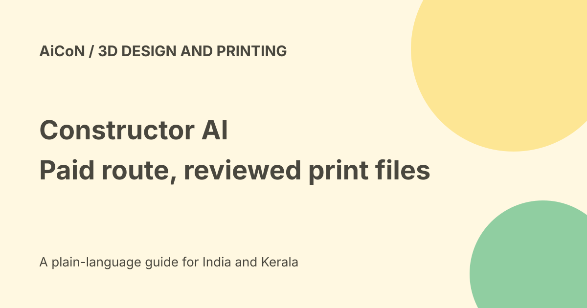

Constructor AI: paid online access and print-safety checks
Constructor AI describes turning dimensions and plain-language requirements into geometry, STL files and G-code. Its current online page is a paid customer-access offer, while general terms still describe a free public test. Do not rely on the old free-test post as proof that the current browser product is openly free. Every generated model and print command needs review.

What the product does
The official homepage describes entering shape, dimensions and requirements, answering missing-detail questions, checking the model in a 3D viewer and preparing STL or G-code.
STL describes surface geometry. G-code contains machine instructions for a printer. A file exporting successfully does not prove it is suitable for your printer or the part's intended use.
Current versus planned features
The homepage lists model construction, STL import and editing, text or image features and print preparation. It separately labels technical drawings, DXF, some fits and additional printer support as in development.
Do not list planned functions as available. Direct printing is described for an Anycubic Kobra S1 using PLA, not every printer and material.
Current browser access is paid
The online page says there is no open free access and that a workspace belongs to one authorised customer account. It lists fixed durations without automatic renewal.
That is different from the general terms' free public-test wording. We preserve the conflict and use the current route's displayed offer rather than promising an unlimited free test.
Listed online prices
The checked offer lists €4.99 for 24 hours, €12.99 for 7 days, €24.99 for 30 days and €149 for 365 days.
At Wise's checked rate of about ₹108.6 per euro, these are roughly ₹542, ₹1,411, ₹2,714 and ₹16,181 respectively. These are approximate conversions, not Indian checkout totals. Confirm currency spread, fees and applicable terms before purchase.
Activation is not instant entitlement
The page says the duration begins at activation rather than order or payment. Initial activation is manual after payment review, during the stated daily 07:00-16:00 window; the page does not establish an India-local time window.
Access expires at the booked duration without automatic renewal, while customer data remains. No access code or paid order was obtained here.
Windows is a separate route
The homepage describes a Windows version with one-time online activation and later offline use, with an update system and customer area.
That does not mean an online duration purchase includes the Windows licence or vice versa. Check the exact product and current terms rather than merging the offers.
Inspect every generated part
The official disclaimer says the system is in active development and requires users to check geometry, dimensions, tolerances, fits, materials, loading, print orientation and settings.
A generated shape is not an engineering approval. A part fitting visually is not proof that it can withstand heat, force or repeated use.
Before any print
- Choose a low-risk test part and specify all dimensions.
- Review follow-up questions instead of letting gaps become guesses.
- Inspect geometry and measure critical features.
- Check material, printer and nozzle requirements.
- Review orientation, supports and tolerances.
- Inspect the G-code and printer limits.
- Confirm the printer is ready and has safe movement clearance.
- Run only a reviewed low-risk test.
- Measure the printed result before practical use.
No model was generated, file uploaded or printer operated for this guide.
High-risk uses
The disclaimer warns against unreviewed use for medical, life-critical, heavily loaded, safety-critical or specially regulated parts.
Use qualified engineering review for those cases. A natural-language design workflow does not replace testing or applicable standards.
Files and rights
The terms say users must have the necessary rights for uploaded STL, images and other files. Review confidentiality and customer-data handling as well.
Do not upload a restricted design merely to try the tool. Keep public demonstrations separate from valuable or regulated project files.
India and language
The checked site is German-first. India checkout, regional access, Malayalam support and English engineering reliability were not tested.
No fixed Indian tax-inclusive quote was verified. Treat the website's current availability and purchase terms as the decision point, not a historical claim.
What changed since the original post?
We replace the blanket free-test verdict with the current paid online route and the conflicting general terms. We separate Windows access, planned functions and direct-printer limits, and add mandatory technical review.
Frequently asked questions
Is the current online route free?
The checked route is paid customer access.
Is generated G-code automatically safe?
No. Inspect it for the actual printer.
Was a part printed?
No.
Sources: Current official product and available functions · Current paid online offer · General terms with older free-test wording · Official technical safety disclaimer · Approximate EUR conversion. Checked 7 October 2026.